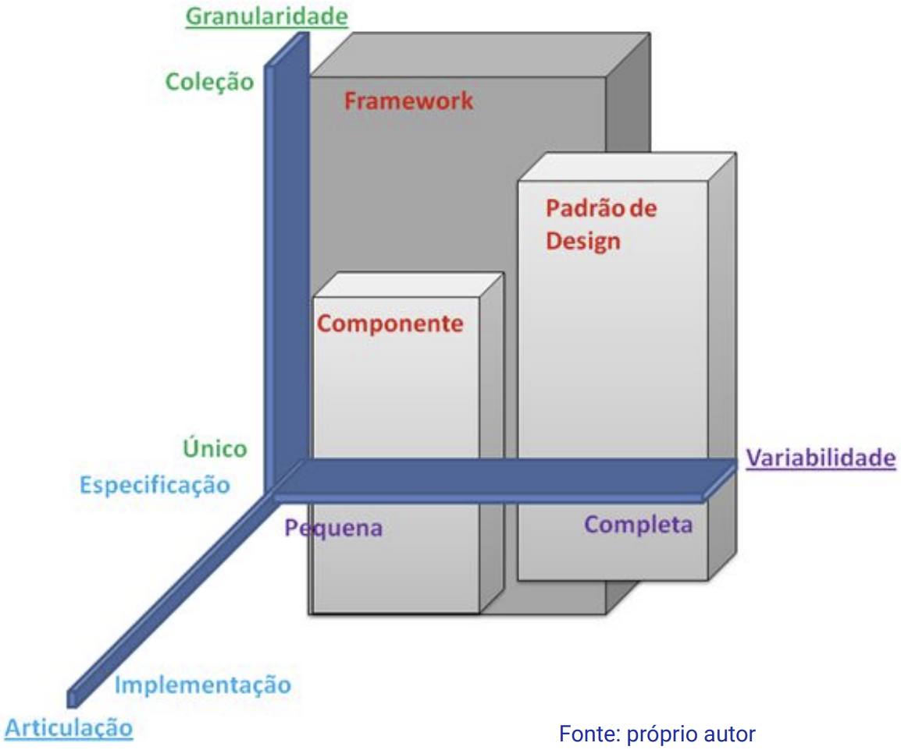

Disciplinas
TÉCNICAS AVANÇADAS DE DESENVOLVIMENTO DE SOFTWARE-T01-2024-2 Concluído
Materiais
Vídeo 1 - [UFMS Digital] Técnicas Avançadas de Desenvolvimento de Software - Módulo 3 - Unidade 1 - Introdução a componentes sendProf° ministrante: Luciano Édipo Pereira da Silva
Conteúdo
- Conceitos básicos de componentes no desenvolvimento de software baseado em componentes - DBC;
- Integração de componentes em sistemas existentes;
- Desenvolvimento de componentes;
- Frameworks e bibliotecas populares para desenvolvimento baseado em componentes.
DBC
Abordagem que promove a construção de sistemas de software por meio da composição de componentes modulares e reutilizáveis, facilitando a criação de soluções flexíveis e eficientes.
Componentes?
- Granularidade
- Articulação
- Variabilidade

Conceitos básicos
- Componente
- Composição
- Interface
- Acoplamento
- Gerenciamento de Ciclo de Vida
- Implantação ou Descoberta Dinâmica
- Contêiner
Integração: Princípios e Característica
- Padrões de Integração
- Adaptação Gradual
- Conformidade Contratual
- Teste de Integração
- Documentação Clara
- Versionamento e Monitoramento
- Compatibilidade Retroativa
Desenvolvimento
- Granularidade adequada
- Interface clara e contrato bem definido
- Reusabilidade
- Baixo acoplamento
- Configurabilidade
- Testabilidade
- Documentação
- Padrões de design
- Gestão de ciclo de vida
- Segurança e confiabilidade
Frameworks e bibliotecas
- JavaBeans e JavaEE
- .NET Framework e ASP.NET
- Angular
- React
- Qt
- Apache Tapestry
- Vue.js
Estudo de caso: TaskHub
Introduza o conceito de Desenvolvimento Baseado em Componentes para permitir a reutilização de funcionalidades.
- Componentes Reutilizáveis.
Desenvolva um sistema web simples para gerenciamento de tarefas:
- Adicione os como campo no TaskHub endereço de realização da Tarefa;
- Analise o código e identifique funcionalidades que podem ser separadas como componentes reutilizáveis (por exemplo, autenticação, manipulação de datas).
- Use algum componente do framework que adiciona funcionalidade de Autenticação.